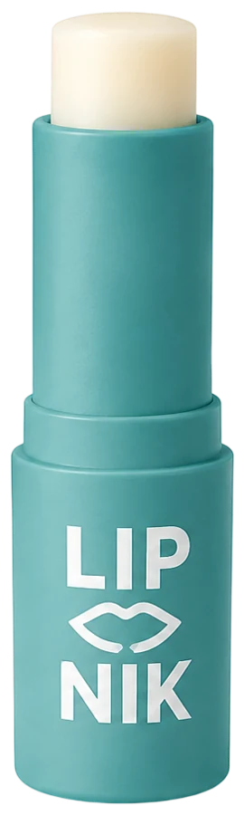
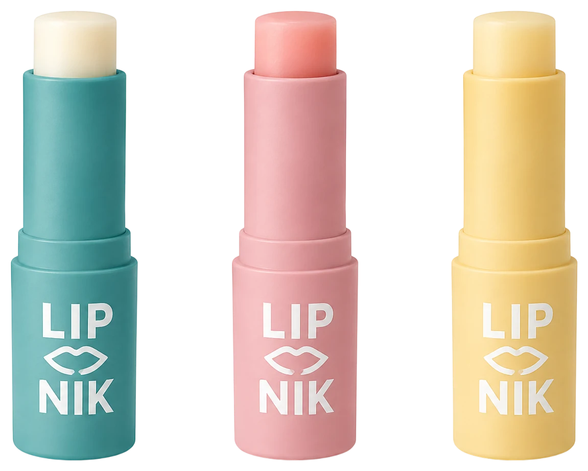
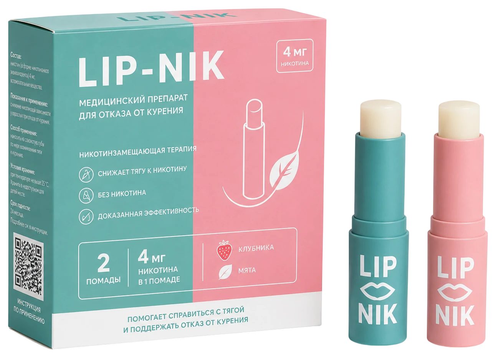
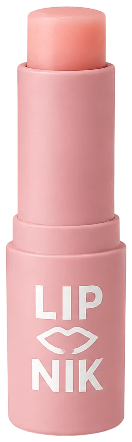
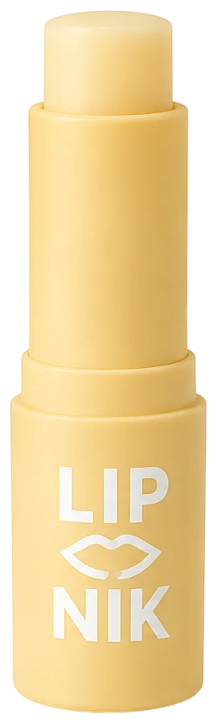

Замещаем сигарету
Никотин без табачного дыма. Привычный жест остаётся с вами.

Разрабатываем первую в России никотиновую помаду
Никотиновая помада нового поколения. Никотинозаместительная терапия, которая работает и с зависимостью, и с привычным ритуалом.

Манифест
Вейп сделал курение красивым и женским. Мы делаем таким же выход.
Никотин через слизистую губ. Без дыма, без запаха — и с тем же ритуалом, к которому вы привыкли.

Концепт упаковки. Продукт в разработке и не продаётся.Продукт
Никотин поступает через слизистую губ — по расчётам разработки, за 5–7 минут. Без дыма, без запаха, без продуктов горения табака.
Контролируемая доза никотина без табачного дыма — чтобы снять тягу к сигарете.
Моторика рук сохраняется. Ритуал замещается, а не ломается.
Три помады: 4 мг → 2 мг → 0 мг. Доза снижается постепенно.
Курс
Каждый месяц — новая помада с меньшей дозой. К концу курса никотина в ней нет совсем.
Никотин без табачного дыма. Привычный жест остаётся с вами.

Доза уменьшается, ритуал — тот же.

Помада без никотина: остаётся только жест.

Схема курса — проектная. Итоговые дозировки определят лабораторные и клинические исследования.
Признание
Министерство здравоохранения Свердловской области официально оценило идею LIP-NIK.
Идея создания антиникотиновой помады LIP NIK как средства борьбы с никотиновой зависимостью признана перспективной.
Минздрав Свердловской области · письмо №03-02-05/10306Нацпроект
Снижение курения среди женщин 18–35 — прямой вклад в рождаемость
Нацпроект
Курение — главный барьер к цели 78 лет к 2030 году
Нацпроект
Отечественная разработка в области НЗТ. Суверенитет в фармацевтике
Научный партнёр
30 лет опыта. Лаборатория биологии кожи. Клиенты — Unilever, Avon
Стадия разработки
Сейчас проект на стадии лабораторных исследований. Каждый этап — под контролем научного партнёра РОС-Химия.
Завершено
Техническое задание составлено. Уникальность ПАВ-эмульгатора подтверждена.
Сейчас
Испытания на клеточных культурах. Лаборатория РОС-Химия, Екатеринбург.
Следующий этап
Тесты на эксплантах кожи. Подача заявки в Роспатент.
Перспектива
Только после них продукт сможет появиться в продаже.
Наша история
Нам по 22–23 года, и вокруг нас курит каждая вторая девушка. Мы поговорили с двумя сотнями из них — и решили сделать выход, который впишется в их жизнь.
Инвесторам
LIP-NIK — рыночная ниша без российских аналогов, письмо Минздрава Свердловской области и научный партнёр с собственной лабораторией.
Вопросы
Никотинозаместительная терапия — признанный в мире метод отказа от курения, в Великобритании это один из основных протоколов. Безопасность самой помады LIP-NIK сейчас проверяется в лабораторных исследованиях, и продукт появится в продаже только после всех испытаний и регистрации.
Курс задуман именно для выхода: 4 мг → 2 мг → 0 мг. К третьему месяцу — помада без никотина, остаётся только привычный ритуал.
Пластырь и жвачка работают только с физической зависимостью. LIP-NIK задуман так, чтобы закрыть оба уровня: рука тянется к знакомому предмету, ритуал выполнен.
Первая аудитория — женщины 18–35. В перспективе — нейтральные форматы (бальзам, стик) для других аудиторий.
Сейчас идут лабораторные испытания. Мы не называем конкретных дат — безопасность важнее скорости. Все, кто оставил заявку, получат уведомление первыми.
Лист ожидания
Оставьте имя и Telegram — напишем лично, когда откроется предзаказ. Первым — особые условия.
Опрос
Ваш голос поможет нам определить честную стоимость. Анонимно и без обязательств.